Selene: Quick Start#
What and where?#
Selene in Python is a tool for automating user actions in the browser, oriented towards the convenience and ease of implementing business logic in automated tests, in the language of the user, without distracting from the technical details of working with the “browser driver”. For example, technical details can include working with element waits when automating testing of dynamic web applications, implementing high-level actions over elements, complex locators based on low-level selectors, and so on.
Under the hood it uses Selenium WebDriver as the main tool for interacting with the browser. Therefore, it is also called more high-level “wrapper” around more low-level tools such as Selenium WebDriver
Let’s get acquainted with the features of it's use.
When? (prerequisites)#
So, owning basic skills in programming and having installed the following tools (you can google how – yourself):
- Python
- pyenv + python
- Chrome Browser
- ChromeDriver – not required, it will be installed from the code automatically
Initialize project#
In unix-terminal (under Windows available via “Windows Subsystem for Linux” or via “git bash”) we will execute the following...
Make sure the required version of Python is in place (in the examples below – 3.7.3, but you probably want to choose the latest one):
Create new project:
> poetry new selene-quick-start
Created package selene-quick-start in selene-quick-start
> cd selene-quick-start
> ls
README.rst pyproject.toml selene_quick_start tests
Install the required local version of python:
Opening the project in PyCharm, we will see a fairly simple project structure:
selene-quick-start
├── .python-version
├── pyproject.toml
├── README.rst
├── selene_quick_start
│ └── __init__.py
└── tests
├── __init__.py
└── test_poetry_demo.py
Where...
selene-quick-start – folder with project. ...
Project structure#
.python-version#
– file with saved local version of Python
README.rst#
– basic documentation in ReST format (replacing the .rst extension with .md you can change the format to Markdown if you like it better)
selene_quick_start#
– the main root module of our project, in which the init-file stores the version of the project:
tests#
– module with tests, with an example of a simple test that checks the current version:
pyproject.toml#
– project configuration file in TOML
The following project configurations were generated automatically when the project was created, and their values are obvious and speak for themselves:
[tool.poetry]
name = "selene-quick-start"
version = "0.1.0"
description = ""
authors = ["yashaka <yashaka@gmail.com>"]
[tool.poetry.dependencies]
python = "^3.7"
[tool.poetry.dev-dependencies]
pytest = "^3.0"
[build-system]
requires = ["poetry>=1.0.0"]
build-backend = "poetry.masonry.api"
# ...
[tool.poetry.dependencies]
python = "^3.7"
[tool.poetry.dev-dependencies]
pytest = "^3.0"
# ...
the pytest library is already connected, which we will use to organize tests and run them.
Now, all you need to do to start working with Selene is to add it to the project dependencies:
# ...
[tool.poetry.dependencies]
python = "^3.7"
selene = {version = "^2.*", allow-prereleases = true}
[tool.poetry.dev-dependencies]
pytest = "^3.0"
# ...
You can also add pytest if this dependency was not generated automatically, or specify another version.
And all this additionally install from the terminal:
Or make the last two steps one command:
poetry.lock#
During the installation, poetry will create a virtual environment and install all the necessary dependencies there, saving their current versions in the poetry.lock file.
If you use git, don't forget to add this file to version control ;)
virtualenv#
Now in PyCharm you should specify in Preferences > Project: selene-quick-start > Project Interpreter the path to the created virtual environment, so that the IDE understands where to look for the dependencies used in the project. Most likely, the list of the just created environment will not be, and you need to add a new one by clicking on the “gear” next to the value of the “Project Interpreter” field. And then set the desired path Add Python Interpreter > Virtual Environment > Existing environment > Interpreter. The path itself can be taken from the log of the poetry install command:
> poetry install
Creating virtualenv selene-quick-start-py3.7 in /Users/yashaka/Library/Caches/pypoetry/virtualenvs
Updating dependencies
Resolving dependencies... (6.5s)
Writing lock file
...
If you didn't find it, specify the name and path of the current activated “env”:
> poetry env list --full-path
/Users/yashaka/Library/Caches/pypoetry/virtualenvs/selene-quick-start-9GqV_4P_-py3.7 (Activated)
Brief introduction to the Selene API#
Now, to use all the beauty of Selene, in the code it is enough to simply make a couple of imports like:
Object browser is the main entry point to the API Selene. Here are its most basic “commands”:
-
browser.open(url)- loads the page by URL (and, by default, opens the Chrome browser automatically, if it is not yet open, and if the Chrome driver is installed in the system), -
browser.element(selector)(orsas in JQuery) - finds an element by selector (CSS, XPath or a special selector fromby), -
browser.all(selector)(orssas in JQuery) - finds a collection of elements by selector (CSS, XPath, or a special selector from thebymodule),
Specialized named selectors, such as search by specific attributes (e.g. by.name('q')) or by text (e.g. by.text('Google Search')) live in the module by.
The be. and have. modules contain conditions for checking elements using the .should* methods, for example:
- to check the corresponding exact text of the element with the value
"submit"of thetypeattribute:
- to check that the element with the value
"q"of thenameattribute is “empty” (i.e. “blank”):
In principle, this is enough for a more experienced or just curious specialist to start working. All other commands will be suggested by your favorite IDE after entering a dot in the code.
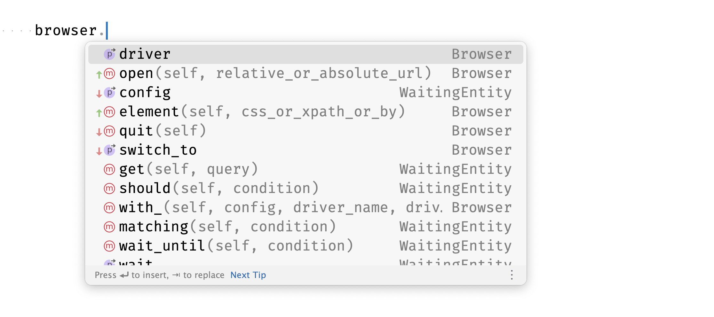

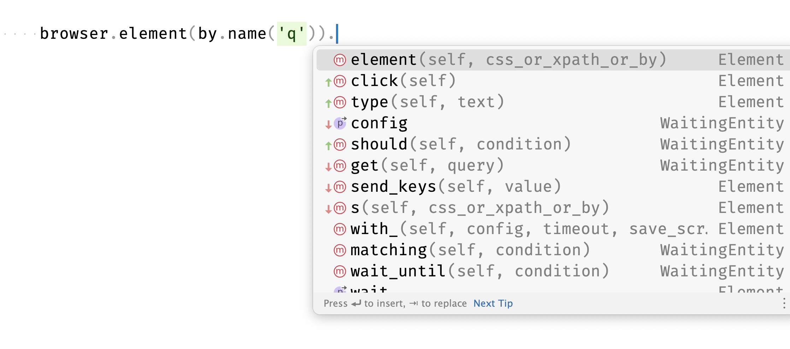
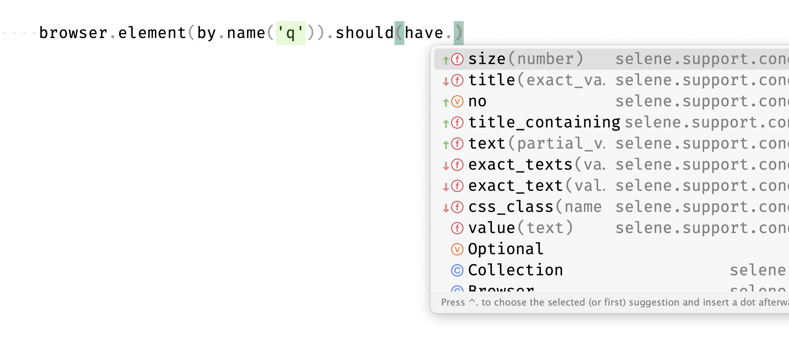
Thus, Selene provides a set of tools for automating user scenarios in his own language, using the terminology familiar to him, which is quite important, for example, for acceptance testing:
First test with Selene + Pytest#
In such an exploratory mode, you can even test google by performing the corresponding...
Selector composition in the browser inspector#
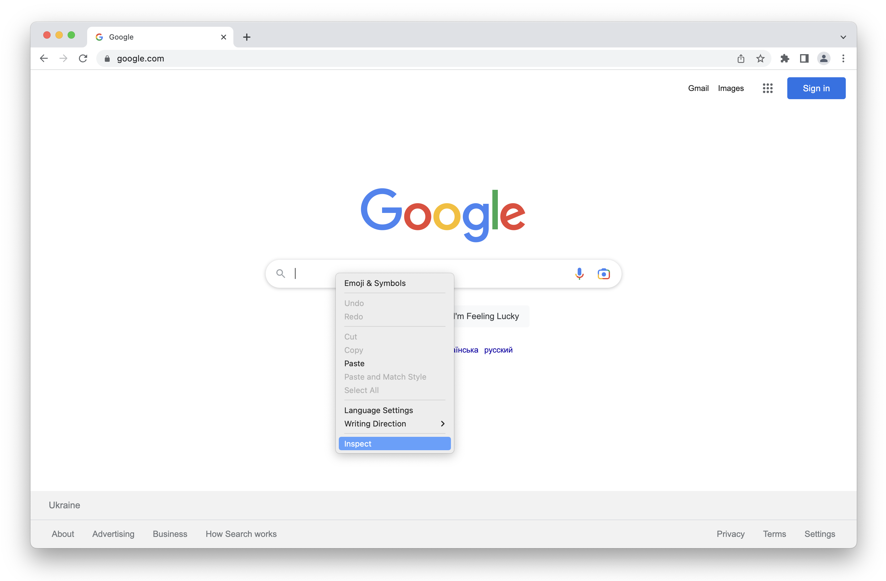
↗️ having called the context menu on the query field and selecting “Inspect”...
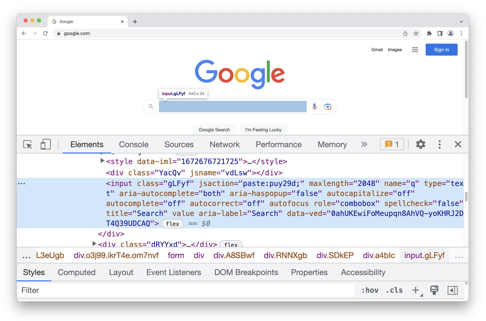
↗️ having seen the highlighted blue html element in the inspector...
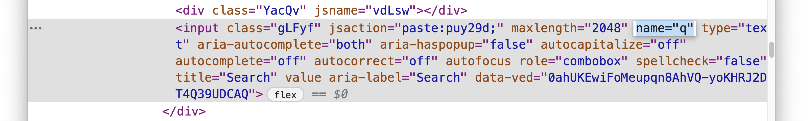
↗️ having selected a more or less readable and unique pair attribute="value"...
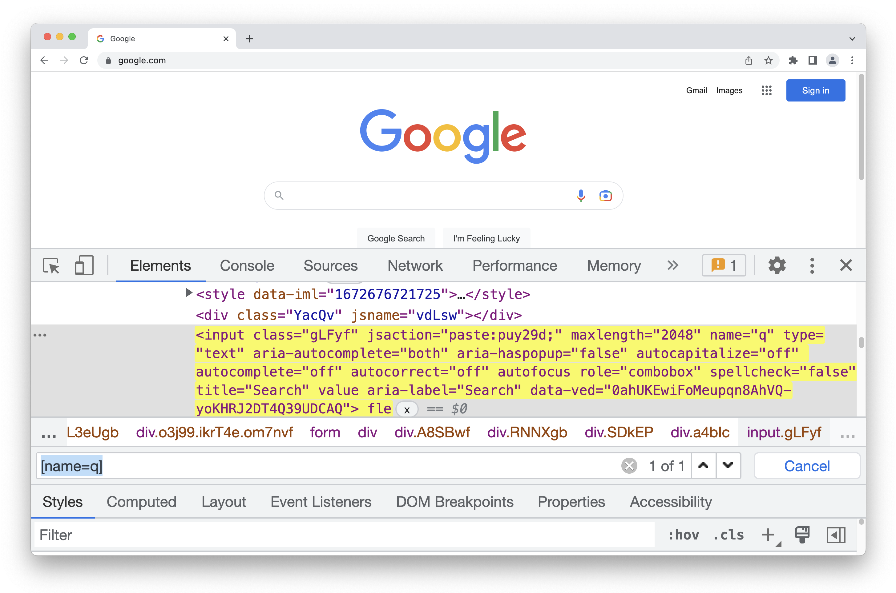
↗️ having composed the corresponding CSS-selector for finding the element ([name="q"] or [name=q] – double quotes in this case are not required) – and having made sure that exactly one element will be found, the one we need (in the future we can also use the locator by.name('q') instead of the selector '[name=q]')...
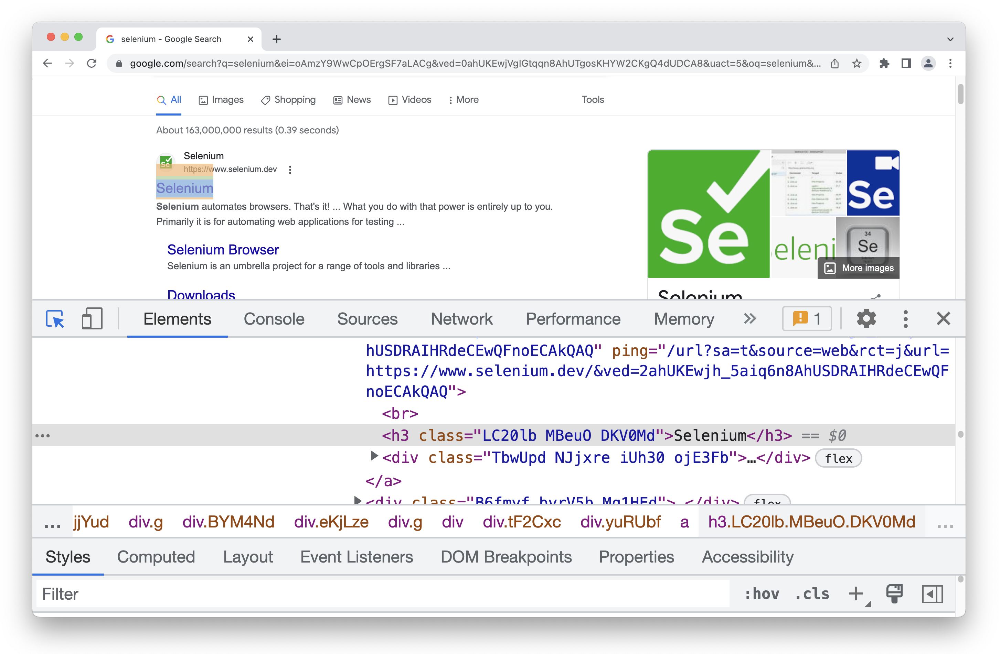
↗️ having performed a search for something like “selenium” – using the “magnifying glass” (the last button highlighted in blue in the menu on the left of the “Elements” tab) – inspect one of the sub-elements of one of the found results...
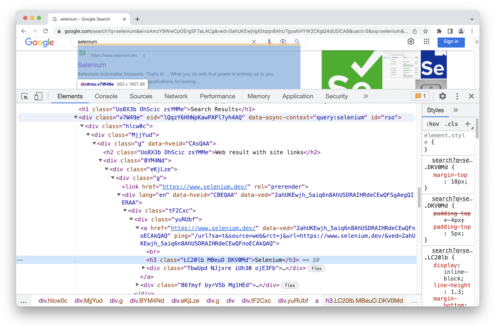
↗️ having risen up the html-tree – find the parent element that unites all elements with results...
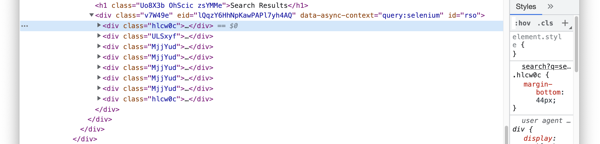
↗️ having collapsed the first “child-element-result” (inspected earlier) – make sure that the other “results” live next to it – and after having not found adequate “attribute-value” pairs for them...
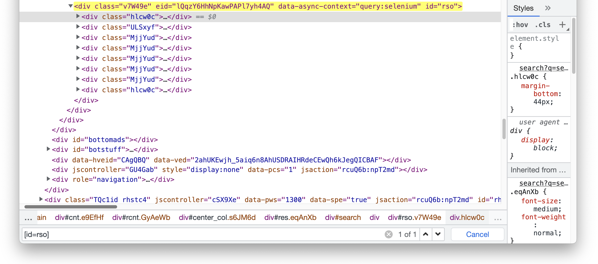
↗️ first having built a CSS-selector to find the “parent” that has a more or less adequate “attribute-value” pair (id="rso" – later, in the code, we can use the abbreviated selector '#rso')...
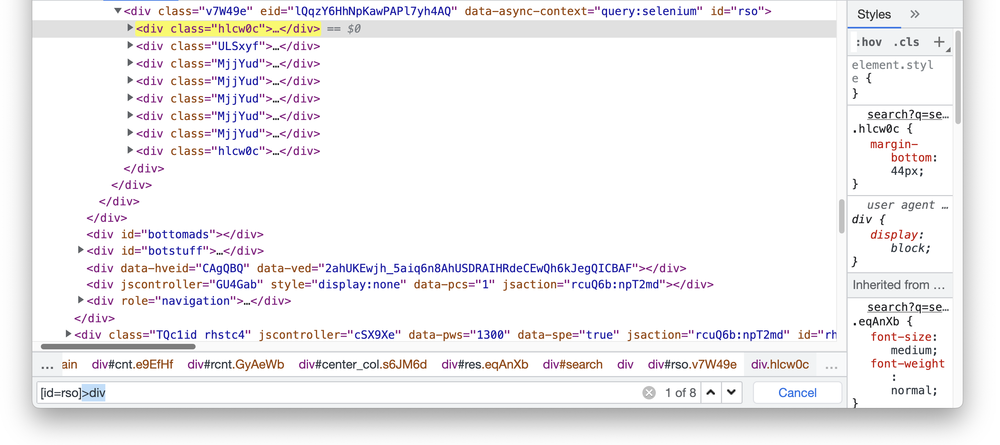
↗️ then having specified the selector to find the “children of the parent by tag” (div) on the first depth of nesting (>) and making sure of the correct number of elements found by the selector (on the picture – 8, but you may have a different number, depending on what google will personally recommend to you)...
– add to the project in the tests folder in the test file test_google.py corresponding...
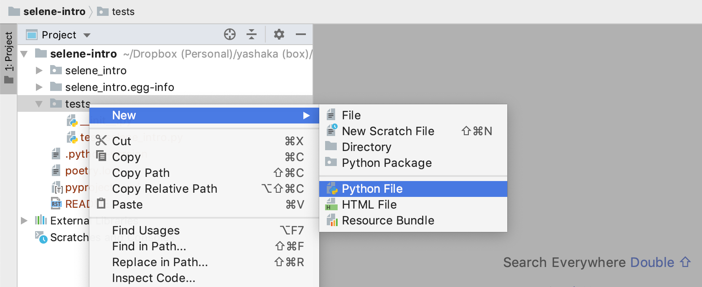
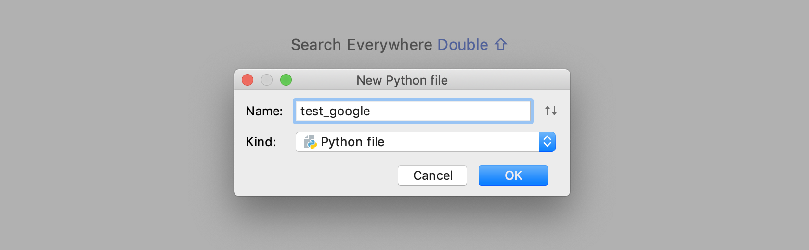
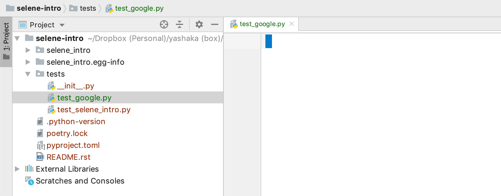
Implementation code of the scenario#
# selene-quick-start/tests/test_google.py
from selene import browser, by, be, have
import pytest
def test_finds_selene():
browser.open('https://google.com/ncr')
browser.element(by.name('q')).should(be.blank)
browser.element(by.name('q')).type('python selene').press_enter()
browser.all('#rso>div').should(have.size_greater_than_or_equal(6))
browser.all('#rso>div').first.should(have.text('selene'))
browser.all('#rso>div').first.element('h3').click()
browser.should(have.title_containing('selene'))
If you had time to set up the test runner in PyCharm:
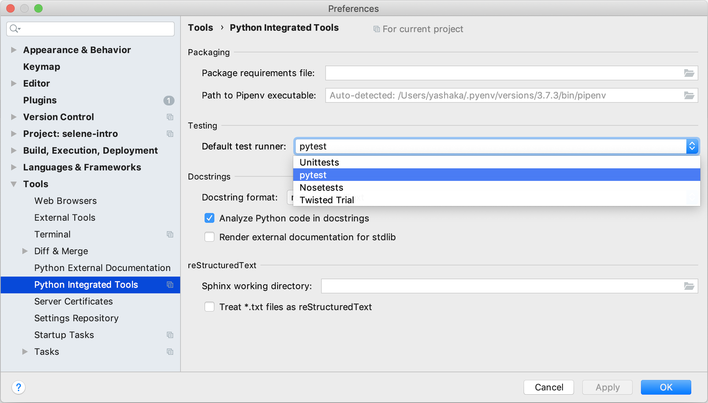
Then you can run the test right from the IDE:
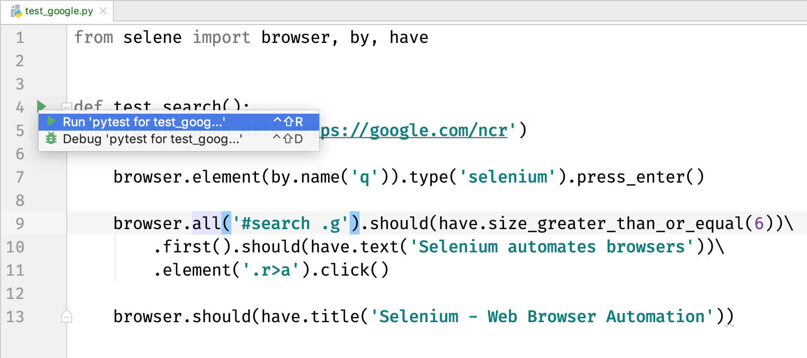
Another way is the good old launch from the terminal:
Or after...
– a little shorter:
Each of the methods should show us a beautiful movie in the Chrome browser ;)
The browser.element (or s) and browser.all (or ss) commands play the role of “high-level locators”, in other words - “ways to find elements”, that is, the result of the command will not lead to an attempt to find the element in the browser at the time of the call, and therefore the result of such commands can be saved in variables, for example
even before opening the browser for more convenient reuse in the future, increasing the readability of the code and removing potential selector duplicates that may change, and cause trouble when updating tests accordingly in many places throughout the project...
# selene-quick-start/tests/test_google.py
from selene import browser, by, be, have
import pytest
query = browser.element(by.name('q'))
results = browser.all('#rso>div')
first_result_header = results.first.element('h3')
def test_finds_selene():
browser.open('https://google.com/ncr')
query.should(be.blank)
query.type('python selene').press_enter()
results.should(have.size_greater_than_or_equal(6))
results.first.should(have.text('selene'))
first_result_header.click()
browser.should(have.title_containing('selene'))
Perhaps, repeating these same steps, your test will not pass. Consider yourself lucky – you have an additional task – to find the error and fix the test. Probably, something has changed in the implementation of the page or search algorithms, and it's time to make updates to the implementation.
A word on documentation and configuration ;)#
If you don't have enough information about how it works, you can always “drill down” (Cmd+Click on Mac OS, Ctrl+Click on Windows) into the code of the implementation of the necessary commands/methods, read comments with documentation (if any), or just figure it out with the code.
For example, you can find out what else is included in the API by falling into the lines with imports in from selene.
There you will find, in addition to the brethren browser, by, be, have, such as element, should, perform, Browser, Configuration, even a small documentation with examples ;) There you can also find some tricks that will allow you to simplify the code written by us above in places, at least - reduce the number of lines :)
Don't be afraid to explore the Selene's API on your own, all commands with parameters are named as naturally as possible in accordance with the value of the corresponding English phrases, and in most cases it is quite possible to understand what a particular command does, just by looking at its “signature” and description.
For example, exploring the “insides” of browser.* in IDE:
– you can quickly find the corresponding methods for setting the browser window size:
# ...
from selene import browser
# ...
browser.config.window_width = 1024
browser.config.window_height = 768
# ...
– and configure their execution before each test using setup fixtures:
# ...
import pytest
# ...
@pytest.fixture(scope='function', autouse=True)
def setup(): # code inside this function (before yield) ...
# will be executed before each test
# to ensure neededed config options
# regardless of what might be changed
# inside previous test
browser.config.window_width = 1024
browser.config.window_height = 768
yield
def test_finds_selene():
# ...
There is a brief description of the main Selene's API. Be sure to read this before using Selene in a real project.
And support can be obtained in the official telegram chat.
More detailed practical application of basic commands is explained in the “Selene in Action” tutorial.
Continue to refactor the test from this tutorial in the context of applying the principle of encapsulation, you can in the “Selene for PageObjects” guide, along the way, figuring out the basic differences in the API Selene from Selenium WebDriver.
If you are just starting to learn automation testing, then this set of materials on the basics of programming can help you too.
Enjoy! ;)
P.S.
Perhaps this guide is the beginning of your path on learning Test Automation or SDET... – keep this learning map as a bonus. Perhaps it will help you make this path more interesting... If you want to go this way with us in the mentoring format starting from any level and reaching up to “Black Belt in SDET”, then not hesitate to get acquainted by filling out this form😉.